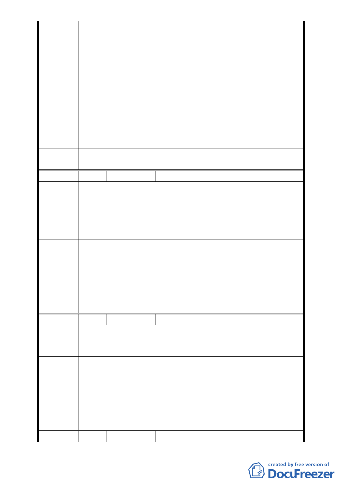

除，並請市府教育局再檢討文化體育園區北側道路其東側之
迴轉道迴轉半徑規劃。
3.本案原公展計畫書往北連通市民大道之道路用地暫不予變
更，在不影響台鐵機廠的運作前提下，由台灣鐵路管理局先
行提供使用，並請市府教育局與台灣鐵路管理局共同會勘，
提出具體路線圖後提大會說明。
4.本案位於文化體育園區與台鐵機廠開發案之間，未來巨蛋、
文化園區、台鐵開發案所引發之交通量需一併考量，請市府
教育局統籌規劃因應。
5.全案修正後資料及相關補充說明請規劃單位彙整並研提修正
前後對照表，人民陳情案件則併建議方案處理，提大會審議。
委員會決
議
同編號 1
編 號 3.
陳情人 交通部台灣鐵路管理局
有關本案變更為道路用地之信義區逸仙段二小段 33 地號
土地屬本局管有土地、信義區逸仙段二小段 33-7 地號為本局與
陳情理由 交通部高速鐵路工程局各持分 1/2 所有，惟貴府開闢道路範圍
穿越本局台北機廠，將影響本局未來機廠搬遷後，土地之整體
規劃，爰現階段本局不同意變更。
本局刻正規劃辦理臺北機廠都市計畫變更申請案，爰本案之規
建議辦法 劃道路用地及取得，應配合本局申請變更案做整體規劃，至紉
公誼。
專案小組
審查結論
同編號 2
委員會決
議
同編號 1
編 號4
陳情人 陳瑞欽
1. 同意四段 553 巷通市民大道，但是禁止車輛進入 553 巷，以
陳情理由 維持原居住品質。
2. 有行人在聯合報站下車，可行走到京華城。
1. 亦就是市民大道通往四段553巷之道路這一段設定為人行徒
建議辦法 步道路。
2. 553巷圍牆請儘速拆除拓寬人行道，改善居民生活環境。
專案小組
審查結論
同編號 2
委員會決
議
同編號 1
編 號5
陳情人 陳彩娥
- 10 -